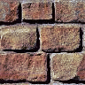

Test purpose
- Create/clone various Pattern styles, using DOM images, and loading images
- Create/clone Block entitys to use the Patterns
- Create a new cell and add it to the canvas
- Animate a pattern-filled block in the new cell
- Use the new cell as the source for a Pattern style
Additionally, using this demo to check zoned canvas User Interactions
- Define onEnter and onLeave functions on the first defined block, to change its linewidth attribute when the mouse cursor hovers over it
- Define anchor objects for each entity, and functionality to action mouse clicks on them
- Check that the 'on...' functions, and the anchor, successfully clone-and-adapt to the other block entitys
- Check that the functionality works by moving the cursor over and away from the blocks
- Check that clicking on an entity results in an appropriate Wikipedia page opening in a new browser tab
- Check that the functionality works using keyboard tabbing and enter (for accessibility)
- Check that the canvas's title (used in its tool prompt) adapts appropriately as user moves between Blocks
Tracking User Interactions
- Add Google Analytics (analytics_debug.js) to the page; create a 'ga' object and tracker
- Adapt the 'on...' functions to trigger tailored analytics messages as user focuses and blurs across the Block entitys
- Adapt the anchor so that it, too, sends a tailored analytics message when the link is invoked
- Check that the tracking functionality works as expected, both for mouse/touch interactions and for keyboard interactions
Kill and resurrect
- Kill and resurrect a Block entity to make sure it removes itself entirely from the Scrawl-canvas system, and cleanly recreate itself from saved packet, and that full functionality - including analytics tracking - can be re-applied to it
- Kill and resurrect a Pattern style to make sure it removes itself entirely from the Scrawl-canvas system, and cleanly recreate itself from saved packet
To note: this test runs very slowly on Chrome-based browsers, but as expected on Firefox/Safari. The issue is entirely around the canvas context drawImage() function - in Chrome, if the source and destination canvas/contexts are of different sizes such that one gets stored in in CPU and the other in GPU then the speed of the drawImage copy gets badly degraded. A workaround would be to consider the sizes of any non-base Cells used in the demo and recode them accordingly. We're keeping this bug in the demo code for now, in the hope that one day Chrome devs find a better fix for this issue.
Touch test: should work as expected - but dragging a finger from one block to another may lead to web page navigation being blocked by browser
Annotated code
